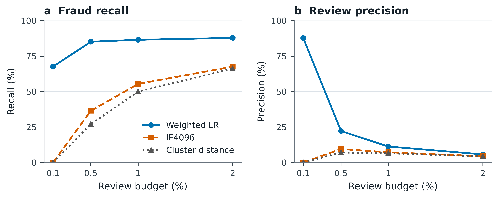
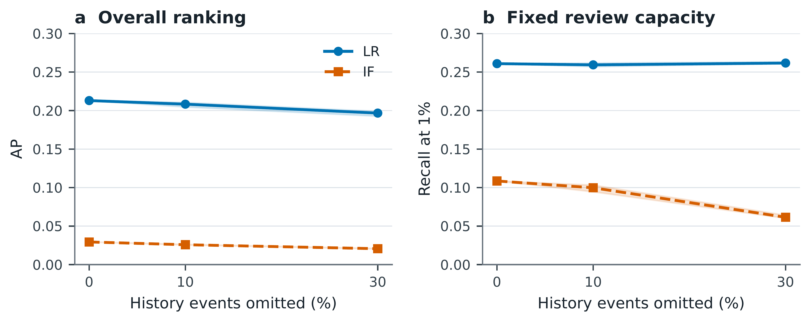

AIAA 3111 / GROUP 20
Credit Card Fraud Detection
under a Limited Review Budget
When reviewers can inspect only a fraction of transactions, which ranking finds the most fraud at the same workload?
At the same 1% budget on the ULB test set, weighted logistic regression found 64 frauds and Isolation Forest found 41. Each reviewed 568 transactions.
Compare at the same workload
We removed exact duplicates from ULB and split the data chronologically. We fit preprocessing on training data and froze model choices before testing. Each method reviewed its highest scoring transactions at the same budget, with 1% as the primary comparison.
Doubling reviews finds one more fraud

At 0.5%, weighted logistic regression (LR) found 63 frauds in 284 reviews. At 1%, it found 64 in 568.
At 1%, the two methods shared 40 detections. Taking both lists would find 65 frauds across 1,036 reviews. The quota selected before testing used LR alone.
Labels and rules
At the same 1% budget, LR found 55–58 frauds with 5% of training labels visible, and 60–63 with 25% visible. Each range comes from three label masks.
The first training-ordered Apriori rule (R001) covered 3,846 transactions and 52 frauds. Its lift was 10.37, while its confidence was 1.35%. The rule highlights a concentration of fraud and covers more rows than the review team can handle.
Same budget, different yield
On ULB, each ranking sends 568 transactions to review. Count the frauds found out of 74.
| Method | Found | Recall |
|---|---|---|
| Weighted LR | 64 | 86.49% |
| Isolation Forest | 41 | 55.41% |
| K-means distance | 37 | 50.00% |
The 1% review list contains 568 of 56,746 test transactions.
Extra context can cost detections
On Handbook, we compared past activity and customer–terminal connections. Each ranking reviewed 1,458 transactions, with 1,280 frauds in the test set.

Adding both histories lowered detections from 346 to 334 for LR and from 334 to 139 for Isolation Forest (IF).
PaySim tests a different setting
At 1,289 reviews, IF led in detections. Amount ranking led in AP.
| Method | Frauds found | AP |
|---|---|---|
| Fixed IF | 102 | 0.0447 |
| Amount | 94 | 0.0798 |
| Weighted LR | 80 | 0.0634 |
Missing history hurts IF more

Set capacity first
Compare detections at the available review capacity. Use AP to examine the rest of the ranking and test whether extra history improves the actual review list.
Evidence comes from one ULB time split and two simulators.